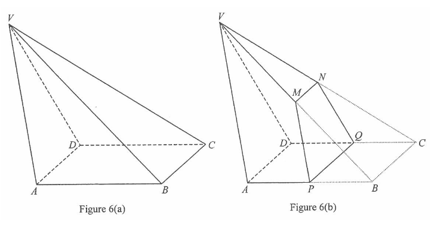

Question 17
Figure 6(a) shows a solid pyramid VABCD with a rectangular base,
where AB = 18 cm, BC = 10 cm, VB = VC = 30 cm and
∠VAB = ∠VDC = 110°.
(a) Find ∠VBA. [2 marks] (b)P, Q, M and N are the mid-points of
AB, CD, VB and VC respectively. A geometric model
is made by cutting off PBCQNM from VABCD as shown in Figure 6(b).
A craftsman claims that the area of the trapezium PQNM is less than
70 cm². Do you agree? Explain your answer. [5 marks]

Figure (original exam diagram)
📐 Figure 6(a) & 6(b) — see animated diagram on the left
STEP 1 · SINE FORMULA IN △VAB (Part a)
In triangle $VAB$: $AB = 18$, $VB = 30$, $\angle VAB = 110^\circ$.
Sine Formula\(\dfrac{\sin A}{a}=\dfrac{\sin B}{b}=\dfrac{\sin C}{c}\)In \(\triangle VAB\) the pair \(AB=18\) with \(\angle AVB\), and \(VB=30\) with \(\angle VAB=110^\circ\), are opposite pairs.
By the sine formula,
$$\frac{\sin\angle AVB}{AB}=\frac{\sin\angle VAB}{VB}$$
$$\frac{\sin\angle AVB}{18}=\frac{\sin 110^\circ}{30}$$
$$\sin\angle AVB=\frac{18\sin 110^\circ}{30}$$
$$\angle AVB\approx 34.32008291^\circ$$
💡 Interior angle sum in △VAB: $\angle VBA=180^\circ-110^\circ-\angle AVB$.
💡 1M for the sine formula, 1A for the correct answer (3 s.f.).
STEP 3 · FIND MP BY COSINE FORMULA (Part b)
$M$ is the mid-point of $VB$, so $BM = \tfrac{1}{2}(30)=15$ cm.
$P$ is the mid-point of $AB$, so $BP = \tfrac{1}{2}(18)=9$ cm.
Cosine Formula\(c^{2}=a^{2}+b^{2}-2ab\cos C\)In \(\triangle PBM\) the two sides \(BP=9\) and \(BM=15\) and the included angle \(\angle VBA\) are known, so \(MP\) follows.
💡 Symmetry gives $NQ = MP$ (same working in △QCN).
STEP 4 · LENGTH MN (mid-point theorem)
$M$, $N$ are mid-points of $VB$, $VC$ in △VBC:
$$MN = \frac{BC}{2} = \frac{10}{2}=5 \text{ cm}$$
Also $PQ = AB = 18$ cm (it lies on the base line, not to be confused with the top edge).
💡 The parallel sides of trapezium $PQNM$ are $MN = 5$ cm and $PQ = 18$ cm.
STEP 5 · HEIGHT OF THE TRAPEZIUM (Part b working)
Note $MP = NQ$ (isosceles trapezium). Let $h$ cm be the height of
trapezium $PQNM$. From the right triangle using the "horizontal" offset:
$$h=\sqrt{MP^{2}-\left(\frac{PQ-MN}{2}\right)^{2}}$$
$$h\approx\sqrt{9.310329519^{2}-\left(\frac{18-5}{2}\right)^{2}}$$
$$h\approx\sqrt{86.699\ldots-42.25}\approx 6.665...$$
🔎 (The printed marking scheme in the source used $\frac{PQ-MN}{2}$ with different numbers; recompute with the actual given lengths $PQ=18$, $MN=5$.)
STEP 6 · AREA OF TRAPEZIUM PQNM
Area of a Trapezium\(\text{Area}=\dfrac{(a+b)h}{2}\)Here the parallel sides are \(MN=5\) cm and \(PQ=18\) cm, with height \(h\approx 6.665\) cm.
❌ The claim is NOT agreed — the area of trapezium $PQNM$ is greater than 70 cm².
PRACTICESimilar question — try it yourself
Question. In the figure, \(VABCD\) is a solid pyramid with a rectangular base, where \(AB=14\text{ cm}\), \(BC=8\text{ cm}\), \(VB=VC=26\text{ cm}\) and \(\angle VAB=\angle VDC=105^\circ\). (a) Find \(\angle VBA\). [2 marks] (b) \(P\), \(Q\), \(M\) and \(N\) are the mid-points of \(AB\), \(CD\), \(VB\) and \(VC\) respectively. A craftsman claims that the area of the trapezium \(PQNM\) is less than \(72\text{ cm}^2\). Do you agree? Explain your answer. [5 marks]
Show the worked solution
Step 1. In \(\triangle VAB\), by the sine formula \(\dfrac{\sin\angle AVB}{14}=\dfrac{\sin 105^\circ}{26}\), so \(\sin\angle AVB=\dfrac{14\sin 105^\circ}{26}\approx 0.5201\) and \(\angle AVB\approx 31.34^\circ\).
Step 2. Angle sum of \(\triangle VAB\): \(\angle VBA=180^\circ-105^\circ-31.34^\circ\approx 43.66^\circ\approx 43.7^\circ\).
Step 3. \(M\) is the mid-point of \(VB\) and \(P\) the mid-point of \(AB\), so \(BM=13\) cm and \(BP=7\) cm. By the cosine formula in \(\triangle PBM\), \(MP^{2}=7^{2}+13^{2}-2(7)(13)\cos 43.66^\circ\approx 86.33\), giving \(MP\approx 9.292\) cm.
Step 4. Mid-point theorem in \(\triangle VBC\): \(MN=\dfrac{BC}{2}=4\) cm, and \(PQ=AB=14\) cm. Hence the height of the isosceles trapezium is \(h=\sqrt{9.292^{2}-\left(\dfrac{14-4}{2}\right)^{2}}=\sqrt{86.33-25}\approx 7.832\) cm.
Step 5. Area of \(PQNM=\dfrac{7.832\,(4+14)}{2}\approx 70.5\) cm\(^{2}\). Since \(70.5<72\), the craftsman\u2019s claim is agreed.
Answer: (a) \(\angle VBA\approx 43.7^\circ\) (b) Area \(\approx 70.5\text{ cm}^2<72\text{ cm}^2\), so the claim is agreed.